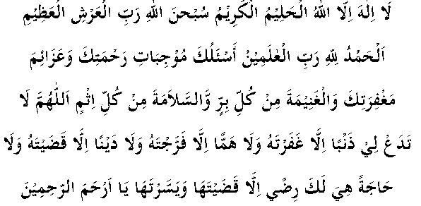

Hadhrat Faḍaala ibn Ubayd (RA) says, "Rasulullah (sallallahu alayhi wasallam) was seated in a gathering when a man entered the Musjid and performed ṣalaah. He then said, 'O Allah, forgive me and have mercy on me.' Nabi (sallallahu alayhi wasallam) said, 'You have been hasty, O person performing Salaah. When you have performed your Salaah, begin by praising Allah Ta’ala as is the right of Allah Ta’ala to be praised, then send durood upon me and finally make dua to Allah Ta’ala. Another man entered the Musjid after this and performed Salaah. After completing his Salaah, he praised Allah Ta’ala and then sent durood upon Rasulullah (Sallallahu alayhi wassalam). Rasulullah (Sallallahu alayhi wassalam) said to him, 'O person performing Salaah! Make dua, for your dua will be answered."
The Ulama have mentioned that it is desirable that the dua begins with the praise of Allah Ta’ala as He deserves, followed by sending durood and salaams upon Nabi (sallallahu alayhi wasallam), and that the dua ends in the same way.
Hadhrat Ibn Mas ūd (RA) says, "When a person intends to ask Allah Ta’ala for something, he should firstly begin by praising Allah Ta’ala in a way which He deserves. Thereafter, he should send durood upon Rasulullah (Sallallahu alayhi wassalam) and then make dua unto Allah Ta’ala. It is close that he will be successful and his dua will be answered."
Hadhrat Abdullaah bin Yusr (RA) narrates that Nabi (sallallahu alayhi wasallam) said, "All duas remain unanswered unless they are started with the praise of Allah Ta’ala and durood upon Rasulullah (Sallallahu alayhi Wassalam). If the dua is done after this, it will be accepted."
Hadhrat Umar (RA) says, "I have been informed that duas remain suspended between the heavens and the earth and do not rise up to the heavens until durood is sent upon Rasulullah (Sallallahu alayhi wasallam)."
Hadhrat Abdullaah ibn Abbaas (RA) says, "When you make dua unto Allah Ta’ala, send durood upon Rasulullah (Sallallahu alayhi wassalam), for your durood is definitely accepted. It is not possible that Allah Ta’ala will accept one part and not accept the other."
Hadhrat Abdullaah ibn Abī Awfaa (RA) narrates that Rasulullah (sallallahu alayhi wasallam) once came out of his house and said, "Whoever has a need from Allah Ta’ala or from any person should perform wuzu in the best manner possible, perform two rakaats of salaah and then praise and glorify Allah Ta’ala, send durood upon Rasulullah (Sallallahu alayhi wassalam) and read the following dua:

(There is none worthy of worship besides Allah, the Compassionate, Most Kind. Glory be to Allah, the Great Lord of the Throne. All praises are due to Allah, Lord of all the worlds. I ask of You that which assures Your mercy, those actions which earn Your forgiveness, a share of every act of virtue and protection from every sin. Do not leave any sin of mine except that You forgive it, no worry except that You remove it and no need in which Your pleasure lies except that You fulfil it, O Most Merciful of those who show mercy.)"
O Sustainer, shower durood and salaam forever and ever upon Your beloved, who is the best of all creation.